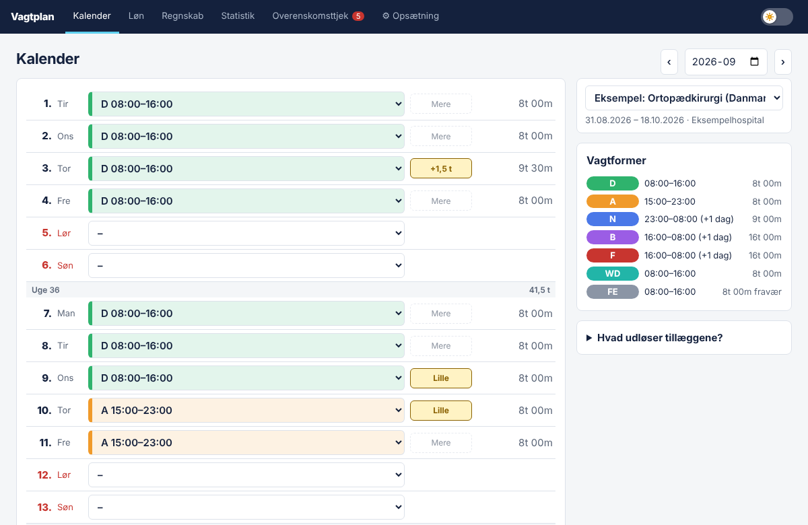

Alle dine ansættelser samlet på ét sted, fra den første vikarvagt til din nuværende stilling. Se vagter, løn, feriedage og afspadsering pr. ansættelse, læg vikarvagter ind ved siden af din faste stilling, og få tjekket planen mod overenskomsten. Til yngre læger i Danmark, Grønland og Færøerne og til studerende, der arbejder som lægevikar.
Du kan prøve den uden at oprette en konto.

Skift mellem ansættelser, uden at noget går tabt. Den seneste står øverst, og perioden vises overalt, hvor du vælger.
Hver ansættelse har sin egen overenskomst, stilling, anciennitet, vagtformer, plan og lønsedler. Du kan se tilbage på tidligere ansættelser og have flere i gang samtidigt.
Skriv din feriesaldo, så regner appen optjening og planlagt ferie ud og viser, hvor mange dage du har tilbage. Afspadsering af overarbejde vises med frist, før det udbetales.
Læg vikarvagter ind som egen ansættelse med egen timeløn. Så ser du de samlede timer, hvile og fridøgn på tværs af begge jobs.
Næste løntrin, frister for afspadsering, løn under sygdom og barsel samt en huskeliste til årsopgørelsen og fradrag.
Skriv beløbene linje for linje, se præcis hvor lønsedlen afviger, og få et udkast til en mail til lønkontoret. Nettolønnen regnes ud fra din trækprocent.
Din plan følger med i Apple Kalender, Google Kalender og Outlook, og opdateres, når du ændrer den (med konto).
Alt ud fra de overenskomster, der gælder for dig. Reglerne ligger i appen, så du ikke selv skal vælge timelønsdivisor, ugenorm eller hviletid.
Lav dine egne vagtformer med farver og tider, også forskellige tider pr. ugedag. Sæt dem på dagene, og se timerne tælle op.
Vælg din stilling og din anciennitet, så finder appen løntrin og tillæg. Forklaringerne er på almindeligt dansk.
Hviletid, fridøgn, vagthyppighed, weekender og tjenestens længde. En rød advarsel kommer, så snart en vagt bryder en regel, og du kan acceptere bruddet.
Normen regnes som et gennemsnit over hele normperioden, ikke pr. uge, så du kan se, hvornår overarbejde udløses.
Ulempetillæg, rådighedsvagt, lille og stort tillæg for pålagte og overtagne vagter, samt evakuering for Grønland og Færøerne.
Se pensionsindbetalingen for hver ansættelse og et samlet årsregnskab, også med vikararbejde ved siden af.
Skriv beløbene fra lønsedlen ind, og se hvor de afviger fra beregningen.
Kopiér en færdig besked til ChatGPT eller Claude sammen med din vagtplan, og indlæs svaret. Så slipper du for at taste vagterne ind.
Hent dine vagter som en kalenderfil til Apple Kalender eller Google Kalender.
Er du studerende og tager vagter som lægevikar, ventilatør eller sygeplejevikar, kan du bruge siden til at holde styr på tid og penge.
Se dine timer for dagen, ugen og måneden på tværs af alle dine jobs, så du ved, hvor meget plads der er til studiet.
Skriv din timeløn ind pr. job, så ser du, hvad måneden giver før skat. Flere vikarbureauer og afdelinger kan ligge ved siden af hinanden.
Siden tjekker, om du får mindst 11 timers hvile mellem vagter og et fridøgn hver uge, også når vagterne ligger på tværs af flere jobs.
Du behøver ikke hente noget i en app-butik. Læg siden på din hjemmeskærm, så åbner den med ét tryk og ser ud som en almindelig app. Den virker på både iPhone og Android.
Log ind, så følger dine data med mellem browseren, appen på hjemmeskærmen og din computer. På iPhone er appen på hjemmeskærmen adskilt fra Safari.
Vælg overenskomst, stilling og periode. Grundlønnen findes automatisk.
Skriv navnet, så foreslår appen en forkortelse og en farve.
Se timer, løn og regelbrud med det samme.
Reglerne følger din ansættelse. Du kan have flere ansættelser med hver deres overenskomst.
Danmark: Yngre Læger, Danske RegionerGrønland: Læger, NaalakkersuisutFærøerne: Yngre LægerStudenterjob og vikar: timelønEgen aftale eller vikarbureauSatserne er hentet fra overenskomsterne, men beregningerne er vejledende. Tjek altid mod din gældende aftale og din lønseddel. Lokalaftaler indgår ikke.
Nej. Appen er uafhængig og er ikke lavet af en fagforening, en region eller en arbejdsgiver.
Satserne kommer fra overenskomsterne, men det er et hjælpeværktøj. Sammenlign med din lønseddel, og kontrollér altid mod din gældende aftale. Der er indbygget en afstemning, så du kan se afvigelser.
Vælg "Egen aftale", og indtast din løn og dine satser selv. Appen kan stadig regne timer, normperioder og regelbrud.
Ja. Vælg "Studenterjob og vikar" som aftale, vælg om du er lægevikar, ventilatør eller sygeplejevikar, og indtast din timeløn. Så får du kalender, timer, forventet løn og hviletidstjek.
Ja. Du kan hente en kalenderfil og åbne den i Apple Kalender eller importere den i Google Kalender.
Ja. Opret hver ansættelse med sin periode, og læg vagterne ind. Du kan også flette en importfil med ansættelser, vagtformer og vagter ind, uden at det overskriver det, du allerede har.
Opret vikararbejdet som en ansættelse for sig, og læg vagterne i den samme kalender. Hviletid og fridøgn tjekkes på tværs af alle dine jobs.
Uden konto kun i din browser. Med konto gemmes de krypteret under transport på serveren, så de følger dig mellem enheder. Læs mere i persondatapolitikken.